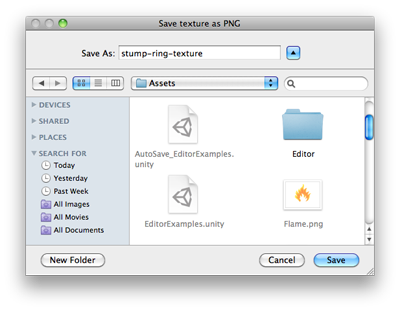

EditorUtility.SaveFilePanel
public static string SaveFilePanel(string title,
string directory,
string defaultName,
string extension);
Description 描述
Displays the "save file" dialog and returns the selected path name.
Note: The dialog has a Save button and a Cancel button. The Cancel button closes the window without saving the texture.
See Also: OpenFilePanel function.

Save File Panel.
// Opens a file selection dialog for a PNG file and saves a selected texture to the file.
using UnityEditor; using UnityEngine; using System.IO;
public class EditorUtilitySaveFilePanel : MonoBehaviour { [MenuItem("Examples/Save Texture to file")] static void Apply() { Texture2D texture = Selection.activeObject as Texture2D; if (texture == null) { EditorUtility.DisplayDialog( "Select Texture", "You Must Select a Texture first!", "Ok"); return; }
var path = EditorUtility.SaveFilePanel( "Save texture as PNG", "", texture.name + ".png", "png");
if (path.Length != 0) { var pngData = texture.EncodeToPNG(); if (pngData != null) File.WriteAllBytes(path, pngData); } } }